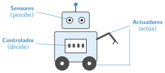
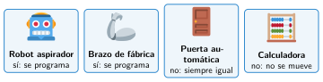

Qué es un robot y qué es un sistema de control
🤔 Pienso5 min
Qué hago aquí: Piensa un momento y contesta con lo que ya sabes. No pasa nada si no lo sabes: es para empezar.
Marca las máquinas que, para ti, son robots. No pasa nada si fallas: al final lo revisarás.
📖 Leo y aprendo15 min
Qué hago aquí: Lee despacio, mira los dibujos y los ejemplos, y quédate con la idea clave del final.
Un robot es una máquina que hace tres cosas:
- Percibe: nota lo que pasa a su alrededor con sus sensores.
- Decide: sigue un programa. El programa se puede cambiar.
- Actúa: se mueve o mueve cosas con sus actuadores.

Las máquinas que funcionan solas tienen un sistema de control. Tiene tres partes:

✏️ Hago20 min
Qué hago aquí: Haz las actividades en orden. Empieza siempre por las básicas.
Completa: un robot , y .
Une cada parte con lo que hace.
| Entrada • | • Decide |
| Controlador • | • Hace la acción |
| Salida • | • Recoge información |
Completa la tabla.
| Máquina | Entrada (sensor) | Salida (actuador) |
|---|---|---|
| Farola que se enciende de noche | ||
| Robot aspirador |
Vuelve a la lista de Pienso. ¿Cambias alguna respuesta? Explica por qué el robot aspirador es un robot y la lavadora no.
✏️ Puedes responder escribiendo, con un dibujo o un esquema, o contándolo en voz alta.
🚀 Amplío (si quieres saber más)
Qué hago aquí: ¿Has terminado? Lee la curiosidad o elige el reto. Es voluntario.
Inventa un sistema de control útil para el patio del colegio. Dibuja su esquema: entrada, controlador y salida.
✅ Compruebo5 min
Qué hago aquí: Contesta sin mirar la ficha y marca cómo lo llevas.